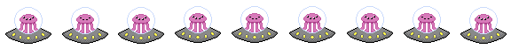
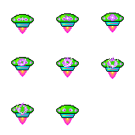
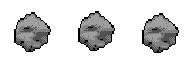
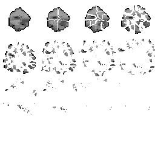
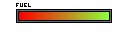
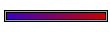
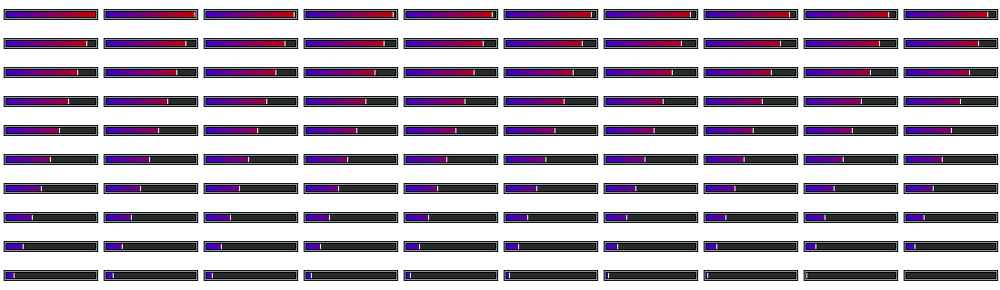
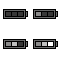

Assets Team
During the project, the assets team focused on creating and maintaining the game’s sci-fi visual identity. A moodboard was developed to establish the overall aesthetic and ensure consistency across the game and blog.
Using Piskel and Aseprite, we created a range of animated pixel art assets, including the player spaceship with damage states, alien enemies, asteroids with explosion animations, planets, bullets, UI elements, and visual effects. Additional assets included health and fuel bars, scoreboard elements, buttons, and animated background tiles. Some experimental assets were later removed from the final version.
Initially, planets were animated manually in Aseprite, but this became impractical due to the number required. To improve efficiency and detail, a pixel planet generator from itch.io was used to create multiple animated planets, including Planet Granite.
IBM Granite also supported idea generation and visual concept development throughout the project.
Sprites
Visual assets used throughout the project.








.gif)
.png)